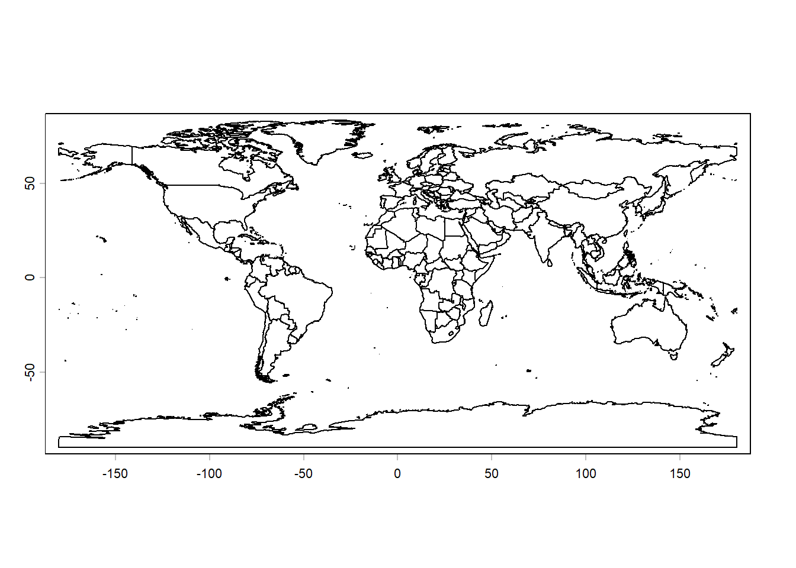
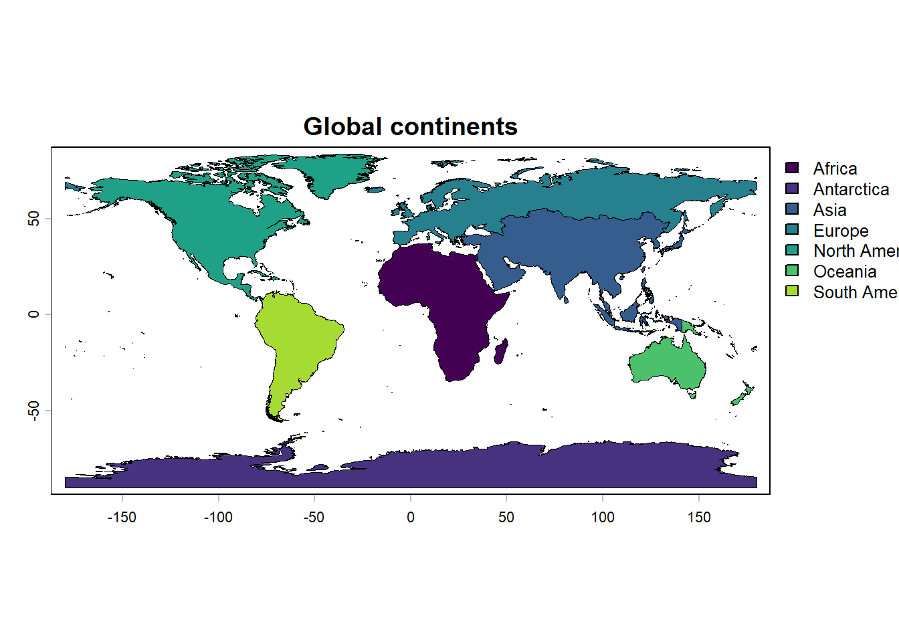
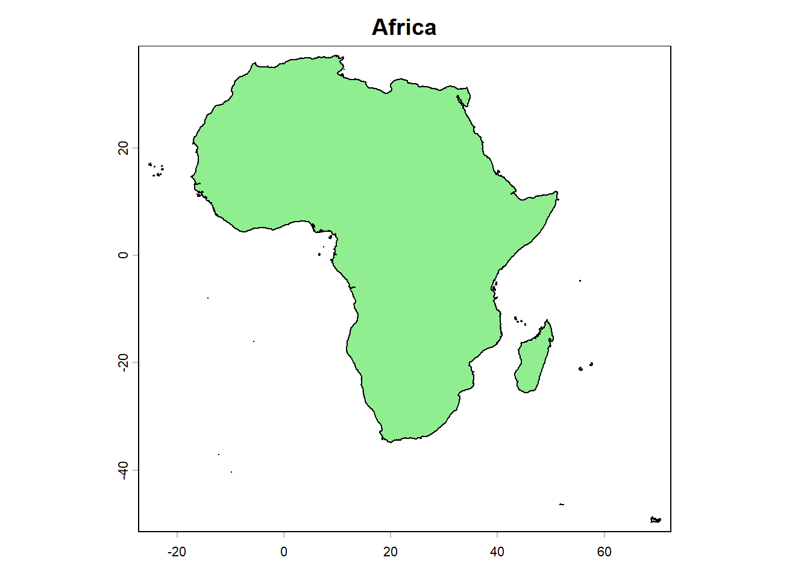
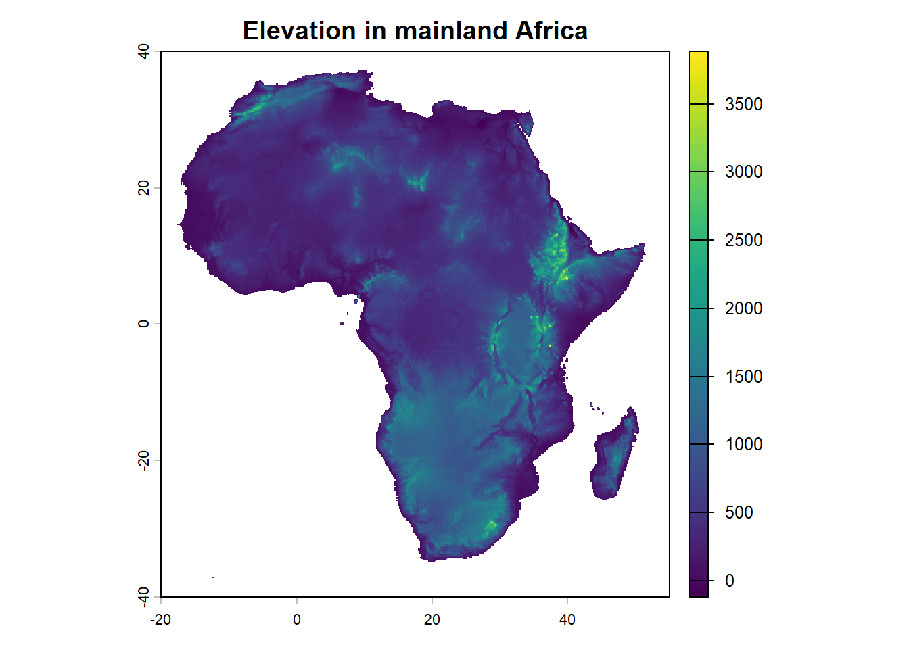
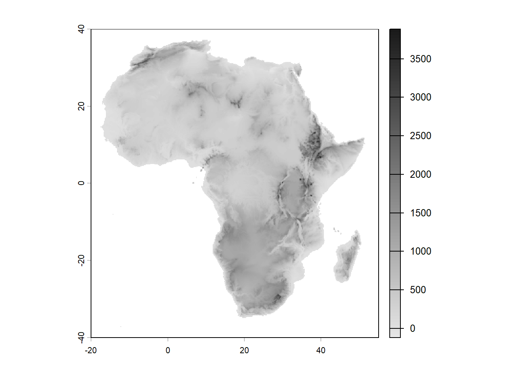
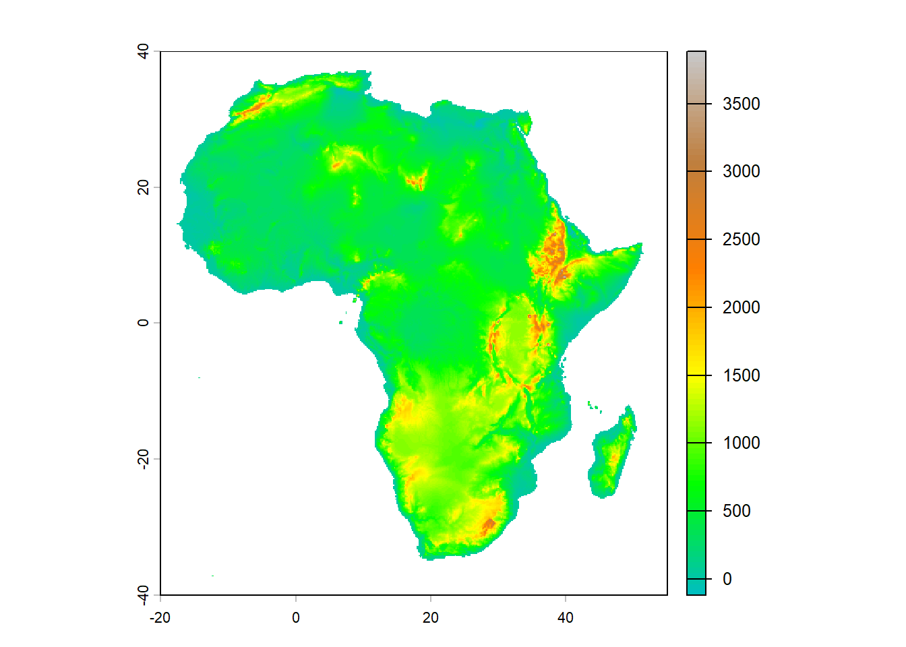
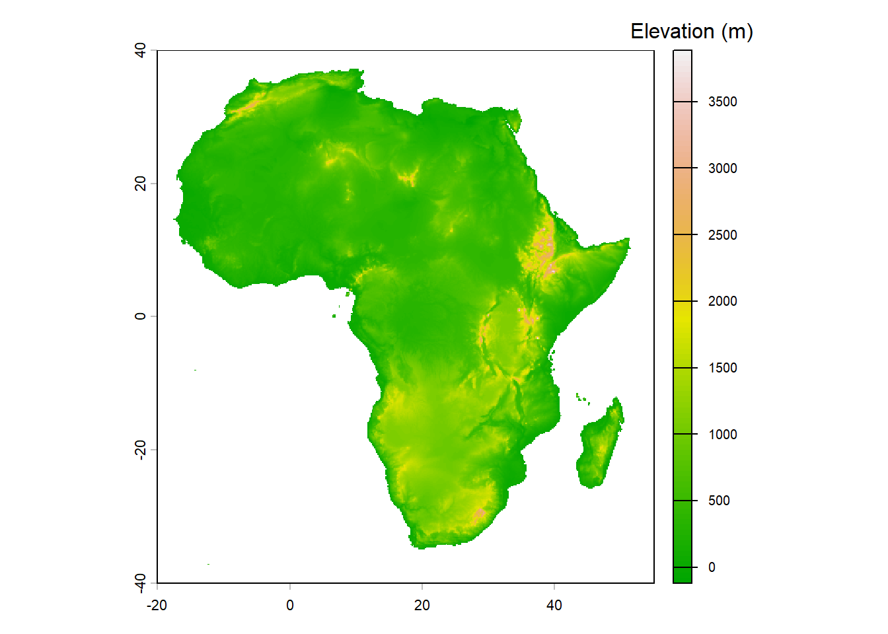
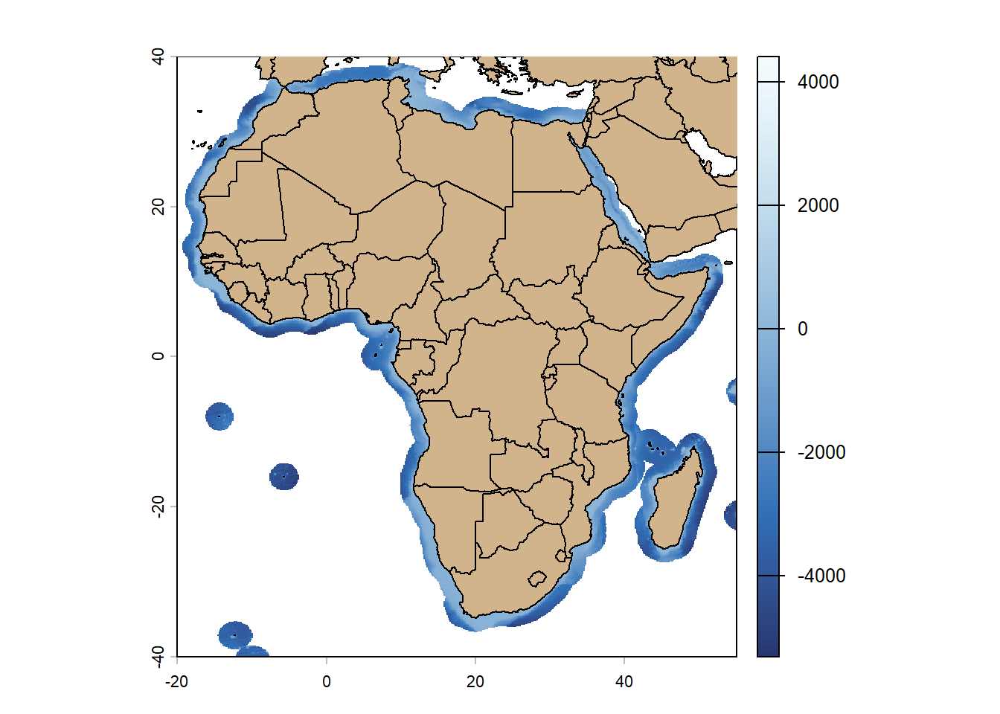
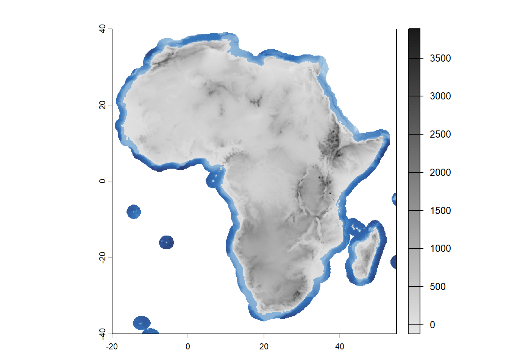

# Load necessary libraries
library(terra)
library(geodata)
library(rayshader)Maps in R
Maps are a powerful way to visualize spatial data in R. There are several packages available for creating maps, including ggplot2, leaflet, and sf. In the examples below, we will be using the package terrato create simple maps. terrahis a package for spatial data analysis that as extensive documentation and tutorials available at https://rspatial.org/. In addition, we will also be using the package geodata that provides access to various global spatial datasets, including elevation, climate, and administrative boundaries. Finally, paleogeographic reconstructions are very useful tools in geology and paleontology and we will be exploring that as well.
The function world() from the geodata package allows us to easily download data about country borders, which can be plotted using the plot() function.
countries <- world(resolution = 5, path = "maps") ## resolution between 1 and 5
plot(countries)
We can also plot only the edges of the landmasses without country borders. To do so, we first need to add country map attributes to the countriesobject and then dissolve the the borders:
cntry.codes <- country_codes()
countries <- merge(x = countries,
y = cntry.codes,
by.x = "GID_0", ## this info should be in the other df
by.y = "ISO3", ## that means the GID_0 and ISO3 are the same
all.x = TRUE)
continents <- aggregate(countries, by = "continent")
plot(continents,
"continent",
lwd = 0.2,
main = "Global continents")
Note that each continent is a multi-part polygon including mainland and islands. Let’s look at Africa, for example:
continents[1,] class : SpatVector
geometry : polygons
dimensions : 1, 12 (geometries, attributes)
extent : -25.33125, 70.5575, -49.73083, 37.33509 (xmin, xmax, ymin, ymax)
coord. ref. : +proj=longlat +datum=WGS84 +no_defs
names : continent GID_0 NAME_0 NAME ISO2 NAME_ISO
type : <chr> <logical> <logical> <logical> <logical> <logical>
values : Africa <NA> <NA> <NA> <NA> <NA>
NAME_FAO NAME_LOCAL SOVEREIGN UNREGION1 UNREGION2 agg_n
<chr> <logical> <logical> <chr> <chr> <int>
NA <NA> <NA> NA NA 59africa <- continents[continents$continent == "Africa", ]
plot(africa,
main = "Africa",
col = "lightgreen")
It is also possible to easily separate islands from the mainlands and plot one of them. Let’s do that and plot only mainlands of all continents:
largest <- (order(expanse(continents),
decreasing = TRUE))[1:length(unique(continents$continent))]
mainlands <- continents[largest, ]
plot(mainlands,
"continent",
lwd = 0.2,
main = "Continent mainlands")We can also plot elevation data using the elevation_global() function from the geodata package. This function allows us to download global elevation data at various resolutions. To do so, we will download elevation data at a resolution of 10 minutes, crop the data to the African mainland, and plot it:
elevation <- elevation_global(res = 10,
path = "maps")
# let's separate Africa
afr_mainland <- subset(mainlands,
mainlands$continent == "Africa")
# crop the elevation dataset based on afr_mainland
elev_afr_mainland <- crop(elevation,
afr_mainland,
mask = TRUE)
# and now plot
plot(elev_afr_mainland,
main = "Elevation in mainland Africa",
xlim = c(-20, 55),
ylim = c(-40, 40))
Here, we just used the default color palette for elevation data. However, we can customize the colors using any palette’s:
plot(elev_afr_mainland,
col = (gray(seq(0.9,0.1,length.out = 100))),
xlim = c(-20, 55),
ylim = c(-40, 40))
plot(elev_afr_mainland,
col = (map.pal("elevation", n = 100)),
xlim = c(-20, 55),
ylim = c(-40, 40))
plot(elev_afr_mainland,
col = (terrain.colors(100)),
plg = list(title = "Elevation (m)", ## this argument adds a legend
cex = 0.8),
xlim = c(-20, 55),
ylim = c(-40, 40))
The terra package also allows you to plot parts of the ocean surrounding landmasses. Here is an example of how to plot the bathymetry around Africa:
# first create a buffer of 200 km around the continent
afr <- subset(continents, continents$continent == "Africa")
afr_buff <- terra::buffer(afr, width = 200000) ## 200km
afr_buff <- terra::buffer(afr_mainland, width = 200000) ## 200km
plot(afr_buff,
col = "darkblue",
background = "lightblue",
xlim = c(-20, 55),
ylim = c(-40, 40))
plot(afr_mainland,
col = "tan",
add = TRUE,
xlim = c(-20, 55),
ylim = c(-40, 40))
# import bathymetry
bathy_source <- "https://gebco2023.s3.valeria.science/gebco_2023_land_cog.tif"
bathy <- terra::rast(bathy_source, vsi = TRUE) ## rasterize it
afr_bathy <- terra::crop(bathy,
afr_buff,
mask = TRUE)
plot(afr_bathy,
col = hcl.colors(100, "blues"),
xlim = c(-20, 55),
ylim = c(-40, 40))
plot(countries,
col = "tan",
add = TRUE,
xlim = c(-20, 55),
ylim = c(-40, 40))
plot(afr_bathy,
col = hcl.colors(100, "blues"),
legend = FALSE,
xlim = c(-20, 55),
ylim = c(-40, 40))
plot(elev_afr_mainland,
col = (gray(seq(0.9,0.1,length.out = 100))),
add = TRUE,
xlim = c(-20, 55),
ylim = c(-40, 40))
Finally, combining the terra and rayshader makes it possible to create 3D maps. Here is an example of the code to create a 3D map of elevation in mainland Africa, that is not run here.
# convert to matrix
elev_matrix <- as.matrix(elev_afr_mainland,
wide = TRUE)
# flip vertically for rayshader
elev_matrix <- elev_matrix[nrow(elev_matrix):1, ]
# create 3D map
elev_matrix %>%
sphere_shade(texture = "imhof1") %>%
plot_3d(elev_matrix,
zscale = 100,
fov = 0,
theta = -45,
zoom = 0.75,
phi = 30,
windowsize = c(800, 800))
# render snapshot
render_snapshot("maps/3D_elevation_Africa.png",
title_text = "Elevation in mainland Africa",
title_size = 20)